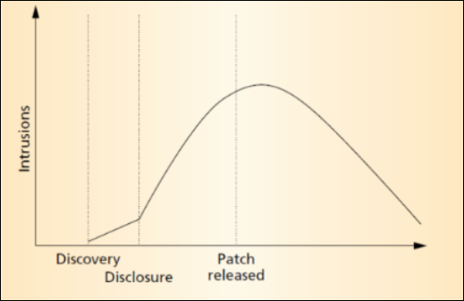
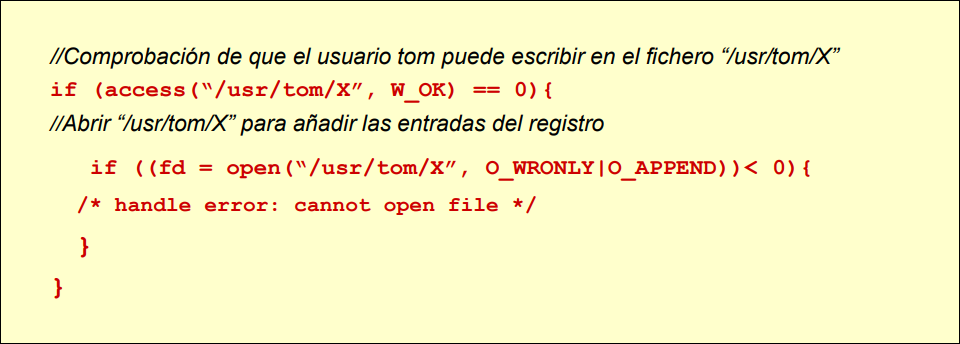
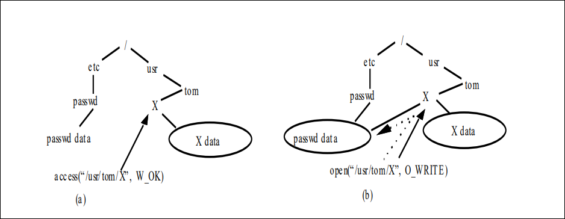
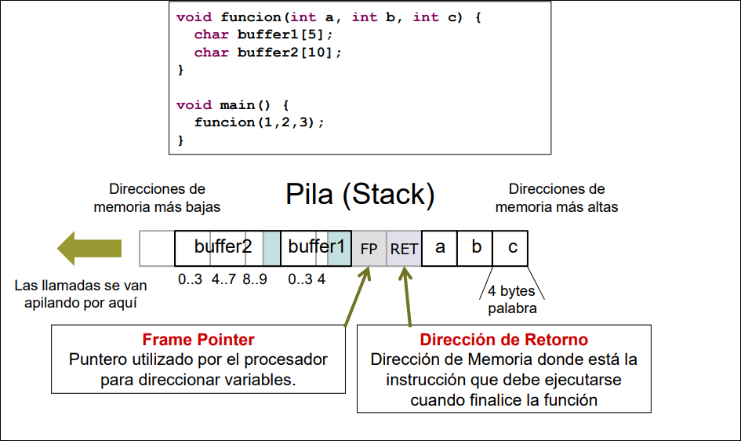
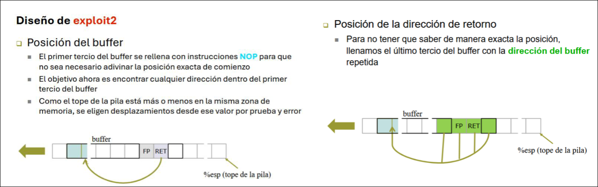
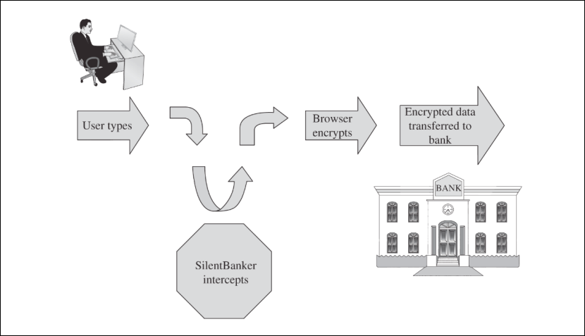
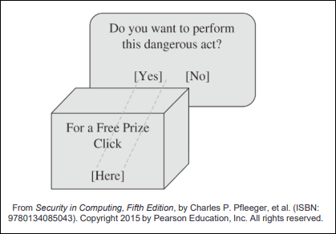
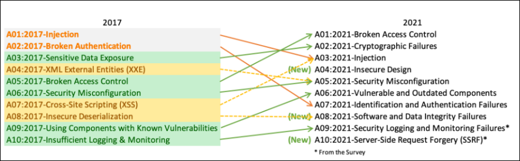
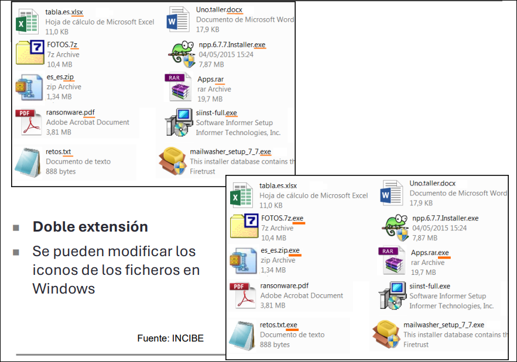

Seguridad en programas y aplicaciones
3.1 Programación segura
El CERT (Computer Emergency Response Team) actúa como centro de coordinación de avisos de seguridad a nivel global. En la práctica, junto con otros CSIRT, pone de relieve una idea importante: buena parte de los riesgos actuales vienen de aplicaciones y servicios en Internet, y muchos de esos problemas no se arreglan con criptografía.
La seguridad no es algo que se añada al final del desarrollo. Depende del entorno real donde se ejecutará el software, de la política de seguridad definida y de las decisiones tomadas desde el diseño. Los atacantes no “crean” por arte de magia los agujeros: normalmente explotan fallos que ya existen.
3.1.1 Introducción
Es habitual que las aplicaciones salgan al mercado con errores que se corrigen después, a medida que los atacantes los van encontrando. Eso tiene varias consecuencias: los parches solo solucionan los fallos ya detectados, muchos administradores tardan meses en aplicarlos o no los aplican nunca, y económicamente suele ser más rentable detectar y eliminar esos problemas antes del lanzamiento.
El patrón típico es conocido: cuando una vulnerabilidad se descubre y se publica, los ataques aumentan; cuando sale el parche, los ataques pueden seguir creciendo porque muchos sistemas siguen sin actualizarse; y el descenso real puede retrasarse incluso más de un año.

Metas de un proyecto software
Todo proyecto software intenta equilibrar varios objetivos, y la seguridad compite con algunos de ellos:
| Meta | Idea principal | Relación con la seguridad |
|---|---|---|
| Funcionalidad | Que el programa haga lo que debe hacer | Suele verse como el objetivo principal |
| Usabilidad | Que sea fácil de usar | Una mala interacción favorece errores humanos; además, puede chocar con medidas de seguridad |
| Eficiencia | Que consuma poco tiempo y pocos recursos | Algunas defensas añaden sobrecarga |
| Time-to-market | Llegar rápido al mercado | Las prisas suelen perjudicar a la seguridad |
También conviene separar dos tipos de prueba. Un test de funcionalidad verifica el comportamiento esperado en situaciones normales. Un test de seguridad comprueba que la aplicación siga comportándose correctamente en situaciones anómalas: entradas demasiado largas, parámetros erróneos, intentos de conexión inválidos o uso malicioso deliberado.
3.1.2 Principios básicos
La programación segura suele resumirse en diez reglas prácticas:
- Asegurar los puntos más débiles. Un sistema es tan fuerte como su eslabón más débil. Si una comunicación va cifrada entre A y B, puede ser más eficaz atacar A o B; si existe un cortafuegos, quizá sea mejor atacar la aplicación expuesta. A veces el punto más débil ni siquiera está en el software, sino en el entorno o en la ingeniería social.
- Practicar la defensa en profundidad. Hay que superponer capas para que el fallo de una no suponga la caída total del sistema. En una base de datos, por ejemplo, pueden coexistir cortafuegos corporativo, cifrado de comunicaciones internas, cortafuegos local, protección física y cifrado de los propios datos.
- Fallar de forma segura. Los fallos son inevitables; lo importante es que, si una acción falla, el sistema quede tan seguro como antes de iniciarla. De hecho, forzar fallos es una técnica clásica de ataque.
- Aplicar privilegios mínimos. Cada componente debería tener solo los permisos imprescindibles y durante el menor tiempo posible. El caso típico es un servicio que necesita privilegios elevados para una operación inicial y que después debería soltarlos. Muchos productos comerciales no lo hacen por comodidad. El ejemplo clásico es un servidor de correo en UNIX: puede necesitar privilegios para abrir el puerto 25, pero no para conservarlos durante toda su ejecución; sin embargo, programas como
sendmaillos mantuvieron históricamente más tiempo del necesario. - Compartimentalizar. Conviene separar subsistemas según sus privilegios y según la parte del sistema con la que necesitan interactuar. Cuanto más aisladas estén las piezas críticas, más difícil será una escalada lateral.
- Apostar por lo simple. El software complejo se entiende peor y, por tanto, falla más. Esto favorece la reutilización de componentes de calidad, el uso de puntos de control claros para operaciones peligrosas, opciones seguras por defecto y un diseño que no dependa de diálogos que el usuario nunca leerá.
- Favorecer la privacidad. La aplicación debe proteger los datos que le entrega el usuario. Además, exponer información innecesaria del propio programa, como su versión exacta, puede facilitar ataques.
- Recordar que mantener secretos es difícil. Ocultar el diseño o la implementación rara vez funciona, sobre todo si el atacante puede estudiar el binario o la comunicación interna. La seguridad no debería depender de esa oscuridad, salvo en secretos reales como contraseñas o claves.
- Ser cauto con la confianza. Un servidor no debe confiar ciegamente en el cliente ni el cliente en el servidor. Tampoco conviene asumir que terceros siguen buenas prácticas o que cualquier “producto de seguridad” es benigno. La confianza es transitiva y hay que tratarla como tal.
- Aprovechar los recursos de la comunidad. Los componentes ampliamente usados, revisados durante años y analizados públicamente suelen ofrecer más confianza que las soluciones ad hoc poco examinadas.
3.2 Vulnerabilidades en el desarrollo de aplicaciones
Una vulnerabilidad software es un fallo en las políticas, procedimientos o controles de un programa que permite a alguien violar su política de seguridad. A quien aprovecha ese fallo se le llama atacante, y al proceso de aprovecharlo se le llama explotación. Un exploit es el programa o técnica concreta que materializa ese aprovechamiento.
3.2.1 TOCTOU
TOCTOU (Time Of Check, Time Of Use) es una vulnerabilidad de sincronización en la que una decisión de acceso se toma en un instante y el uso real del recurso ocurre un poco después. Ese hueco es la ventana de vulnerabilidad: durante ese tiempo, un atacante puede cambiar la situación y provocar un acceso incorrecto.
En accesos a ficheros suelen darse tres condiciones para que el ataque sea viable: el atacante tiene acceso a la máquina local, el programa vulnerable se ejecuta con privilegios elevados como setuid o setgid, y esos privilegios se mantienen durante la ventana de vulnerabilidad.
Las medidas típicas son conocidas. Si es posible, conviene trabajar con descriptores o punteros de fichero en lugar de con nombres, porque así el objeto abierto ya no cambia por el camino. Si no es posible, el fichero debería residir en un directorio accesible solo para el UID del programa. Y, en general, no debería usarse setuid o setgid salvo que sea estrictamente necesario.
Ejemplo: xterm
xterm actuaba como emulador de terminal para X11 y, en ciertos sistemas UNIX, necesitaba ejecutarse con privilegios elevados. Su mecanismo de registro permitía al usuario guardar entradas y salidas en un fichero: si el fichero no existía, xterm lo creaba; si ya existía, comprobaba que el usuario pudiera escribir en él y luego añadía el registro.
El problema es que root puede escribir en cualquier fichero, así que la comprobación tendía a salir bien. Entre access y open quedaba una ventana en la que un atacante podía sustituir el nombre por un enlace simbólico hacia un fichero sensible y lograr que el programa lo abriera con privilegios.


Para elevar la probabilidad de éxito, el atacante puede automatizar el reemplazo del enlace hasta acertar con la ventana vulnerable.
3.2.2 Desbordamiento de memoria
Un buffer es una zona de memoria de tamaño prefijado destinada a almacenar datos del mismo tipo. Hay desbordamiento cuando un programa intenta escribir más datos de los que caben. Lo que sobra pisa memoria adyacente, corrompe datos válidos y puede incluso alterar el flujo de ejecución.
Hay ataques remotos, cuando la entrada llega desde la red, y ataques locales, cuando un usuario con acceso al equipo intenta escalar privilegios explotando una aplicación que corre con otro usuario, por ejemplo root.
El impacto real depende de cuatro factores: cuánta información se escribe fuera de límites, qué datos se sobrescriben, si el programa vuelve a leer esos datos y con qué valores han sido sustituidos.
Por qué es un problema de seguridad
La variante clásica es el stack-smashing: el atacante introduce código propio en la pila y fuerza un salto a esa zona modificando la dirección de retorno. Desbordar el heap suele ser más difícil, por eso muchos desarrolladores se sienten más cómodos con reserva dinámica, pero eso no elimina el problema.
Si el programa vulnerable corre con setuid, el fallo puede convertirse en una vía de escalada de privilegios. Y si el servicio está expuesto a la red, el ataque puede llegar a ser remoto.

En este contexto aparecen dos términos frecuentes:
- Shellcode: código pensado para ejecutarse dentro del programa vulnerable y tomar su control. El ejemplo clásico abre una shell mediante
execve("/bin/sh", ...). - Exploit: programa o secuencia de entrada que aprovecha una o varias vulnerabilidades para ejecutar ese código o alterar el flujo del programa.
Un exploit de pila suele combinar varias piezas: relleno para alcanzar la zona sensible, a veces una NOP sled para no tener que acertar una dirección exacta, el shellcode y una o varias direcciones de retorno que redirigen la ejecución.

Contramedidas
No existe una defensa única. Lo razonable es acumular barreras en varias capas:
| Capa | Medidas habituales | Limitaciones |
|---|---|---|
| Desarrollador | Comprobar límites, usar funciones como strncpy, revisar con cuidado bucles con getc y similares, o usar lenguajes con comprobación de límites como Java o C# |
Requiere disciplina y no corrige errores ya escritos |
| Compilador | Compiladores con comprobación de límites, StackGuard, protecciones de pila y avisos de gcc frente a modificaciones sospechosas |
Puede penalizar rendimiento y no cubre todos los desbordamientos, especialmente en heap |
| Sistema operativo | Pila no ejecutable, ASLR | Se puede intentar rodear mediante prueba y error u otras técnicas |
| Red | DPI para detectar shellcodes, secuencias largas de NOPs u otros patrones | El malware puede ofuscarse o automodificarse |
La experiencia práctica es clara: la base del CERT contiene muchas vulnerabilidades de este tipo, siguen apareciendo constantemente, suelen ser fáciles de explotar cuando existen y no hay una solución universal que proteja cualquier programa vulnerable.
3.3 Vulnerabilidades web
3.3.1 Ataques centrados en la web y en la sesión del usuario
Man in the Browser introduce malware en el navegador para interceptar o modificar lo que el usuario escribe o envía, incluso si luego la comunicación viaja cifrada.

Registro de pulsaciones o keylogging consiste en capturar todo lo que el usuario teclea para robar credenciales u otra información. Puede hacerse con malware o incluso con hardware, y no se limita al navegador.
Page in the Middle redirige al usuario a una página distinta de la que cree visitar para capturar o manipular su entrada.
Browser in the Browser simula dentro de la propia web una ventana de inicio de sesión aparentemente legítima para engañar al usuario.
Clickjacking oculta la acción real asociada a un clic. El usuario cree pulsar algo inocente, pero en realidad activa otra operación, como conceder acceso a cámara o micrófono.

3.3.2 Engaño al usuario
Phishing es cualquier mensaje o comunicación que engaña a la víctima para que entregue datos privados o haga algo inseguro.
Un sitio web falso imita a uno legítimo para ganarse la confianza del usuario y robar credenciales o datos sensibles.
La sustitución en la descarga de programas ofrece software aparentemente normal que, al descargarse o instalarse, introduce malware o spyware.
Las herramientas falsas se presentan como utilidades útiles o incluso como soluciones de seguridad, pero en realidad manipulan al usuario, muestran alertas falsas o instalan malware.
User in the Middle convierte al propio usuario en intermediario involuntario. Un ejemplo típico es hacerle resolver un CAPTCHA o completar una acción que en realidad beneficia al atacante, como la creación masiva de cuentas.
3.3.3 Mediación incompleta
La mediación incompleta aparece cuando el servidor confía demasiado en datos que llegan del cliente y no los vuelve a validar. Entonces basta alterar parámetros de la URL o del formulario, como precio, cantidad o identificadores, para cambiar el resultado.
La regla aquí es simple: no se debe confiar en el navegador ni en la entrada del usuario, porque ambos pueden ser manipulados antes de llegar al servidor.
3.3.4 Ataques de inyección
Un ataque de inyección introduce datos maliciosos para que la aplicación ejecute o interprete algo distinto de lo esperado.
Los casos más conocidos son:
- XSS (Cross-Site Scripting): se inyecta script o HTML para que el navegador ejecute contenido malicioso dentro de una web.
- Path traversal: se manipulan rutas como
../para acceder a ficheros del servidor que no deberían exponerse. - Inyección SQL: se introducen fragmentos SQL para alterar las consultas a la base de datos.
Las contramedidas básicas son siempre las mismas: filtrar y sanear toda la entrada, teniendo en cuenta cualquier codificación válida; no hacer suposiciones sobre lo que enviará el usuario; y apoyarse en controles del lado servidor, como procedimientos almacenados o mecanismos equivalentes.
3.3.5 OWASP
OWASP es una comunidad y proyecto abierto orientado a mejorar la seguridad de las aplicaciones web y a ayudar a desarrollar, comprar y mantener aplicaciones de confianza.
Uno de sus recursos más conocidos es el OWASP Top 10, una lista de riesgos que se actualiza con el tiempo. Ya en la transición de 2013 a 2017 cambiaron varias categorías, por ejemplo con la aparición de XXE y de Insecure Deserialization y con el peso creciente del Broken Access Control. La imagen usada en los apuntes muestra además la transición de 2017 a 2021, donde aparecen categorías como Broken Access Control, Cryptographic Failures, Injection, Insecure Design, Security Misconfiguration, Vulnerable and Outdated Components, Identification and Authentication Failures, Software and Data Integrity Failures, Security Logging and Monitoring Failures y SSRF.

3.4 Código malicioso
El código malicioso o malware es software que se ejecuta sin el conocimiento o autorización del propietario del equipo y realiza acciones perjudiciales para el usuario o para el sistema. A menudo se apoya en operaciones legales: un usuario autorizado podría realizarlas sin violar la política de seguridad, y el malware simplemente imita a ese usuario.
3.4.1 Tipos de malware
Los tipos más habituales son:
| Tipo | Qué hace | Rasgo característico |
|---|---|---|
| Virus | Se replica asociado a un programa huésped e infecta otras copias | Suele activarse al ejecutar el código infectado y busca pasar desapercibido |
| Troyano | Parece inofensivo, pero ejecuta acciones maliciosas | Combina una función visible con otra encubierta |
| Rootkit | Intercepta funciones del sistema para ocultarse a sí mismo o a otro malware | Puede ocultar procesos, ficheros, claves del registro o tráfico |
| Gusano | Se replica por una red sin requerir ayuda directa del usuario | Puede degradar el rendimiento y propagarse por correo o protocolos estándar |
| Spyware | Recopila información del equipo y del usuario | Puede esconderse, cambiar el navegador o instalar barras de herramientas |
| Rogueware | Finge ser un antivirus o una herramienta útil | Muestra falsas infecciones e intenta cobrar o forzar instalaciones |
| Ransomware | Bloquea el equipo o cifra archivos para exigir un rescate | Su objetivo es el secuestro o la extorsión |
| Keylogger | Registra las pulsaciones del teclado | Puede ser software oculto o incluso hardware conectado al equipo |
Conviene matizar algunos casos. En un troyano hay una acción visible y otra encubierta; en un rootkit son frecuentes las puertas traseras, que abren conexiones externas y escuchan en puertos concretos, y un ejemplo clásico es un ps troyanizado que oculta un proceso; un gusano suele componerse de un localizador de objetivos, un propagador, un mecanismo de control remoto, una interfaz de actualización, una rutina de payload y algún sistema de autorastreo. Los gusanos de correo son especialmente comunes.
Además de los tipos anteriores, también se citan:
- Adware: realiza acciones publicitarias ocultas, como falsos clics, para dar beneficio al atacante.
- Hoaxes: mensajes falsos sobre virus, amenazas o causas solidarias que buscan difusión masiva.
- Exploits: código diseñado para ejecutar acciones en otros sistemas, locales o remotos, aprovechando vulnerabilidades.
3.4.2 Objetivos del malware
Hoy en día, en un porcentaje muy alto de casos, la infección está ligada directa o indirectamente a un móvil económico.
El primer objetivo clásico es el robo de información: usuarios y contraseñas, historial de navegación, cookies, libretas de direcciones y también propiedad intelectual o industrial.
El segundo es el secuestro. Aquí entran el ransomware que bloquea el equipo y el que cifra sus ficheros; en ambos casos la condición para recuperar el uso del dispositivo o de los datos es pagar.
El tercero es el reclutamiento para botnets. Una red de bots o zombies es un conjunto de equipos infectados por un malware concreto y controlados desde un centro de Comando y Control. Un zombie aislado aporta poco; miles de ellos sirven para atacar otros equipos, enviar correo masivo, romper contraseñas, minar criptomonedas o robarlas. Cuantos más equipos infectados, mayor valor económico tiene la red, incluso como servicio alquilado a terceros.
3.4.3 Transmisión, propagación y activación
El malware puede llegar al sistema por muchas vías: programas de instalación, adjuntos, enlaces de descarga, fallos del navegador u otro software instalado, cracks o generadores de claves, dispositivos USB infectados, programas “gratuitos” descargados de sitios poco fiables y aplicaciones falsas que hacen más de lo que prometen.
Un truco de ingeniería social muy común es la doble extensión y la manipulación del icono del fichero, especialmente en Windows, para hacer pasar un ejecutable por un documento inocente.

Una vez presente en el sistema, el malware puede activarse de distintas formas: ejecución única, infección del sector de arranque, residencia en memoria, infección de ficheros de aplicación, infección de librerías o activación apoyada en ingeniería social.
3.4.4 Prevención y detección
Las medidas básicas siguen siendo muy pragmáticas: usar software de fuentes fiables, probarlo en entornos aislados, abrir solo adjuntos de los que se conoce su seguridad, tratar cualquier sitio web como potencialmente dañino y mantener copias de seguridad.
Los escáneres de malware buscan signos de infección usando firmas en disco y en memoria. Sus mecanismos de detección suelen basarse en patrones de cadenas, patrones de ejecución y patrones de almacenamiento.
El problema es que el malware evoluciona rápido y los antivirus tradicionales no siempre consiguen mantenerse al día. Por eso muchos códigos maliciosos incorporan mecanismos de autodefensa para evitar ser detectados, dificultar el análisis, ocultarse en el sistema o entorpecer a antivirus y cortafuegos. El uso de rootkits forma parte de esa lógica.
3.4.5 Técnicas de evasión del malware
Tunneling
El tunneling crea un “túnel” entre el sistema operativo y el antivirus para proteger al malware de los módulos residentes que vigilan comportamientos típicos. Es especialmente frecuente en malware residente en memoria.
En sistemas donde el usuario trabaja con privilegios altos, el malware puede intentar deshabilitar o matar el antivirus o el cortafuegos, esquivar los mecanismos de detección por comportamiento, borrar campos de integridad de la base del antivirus, ejecutar su código “a través” del antivirus, troyanizar la base de firmas o impedir que el producto se conecte para actualizarse.
Armouring
Armouring agrupa técnicas destinadas a impedir que el malware sea analizado. El objetivo es dificultar el acceso a los ficheros abiertos, evitar el desensamblado o bloquear el tracing con depuradores.
Las técnicas citadas en los apuntes son: antidesensamblador, cifrado de datos, ofuscación, compresión del código, antidepuración, antiheurísticas, antiemulación y anticebo.
Virus polimórficos
Un virus polimórfico cambia su forma cada vez que infecta otro programa. La idea es eludir la detección por firma modificando instrucciones o incluso el algoritmo concreto que realiza la misma tarea. Un ejemplo típico es incluir varias rutinas de cifrado y descifrado y elegir una al azar en cada infección.
3.4.6 APT y MITRE ATT&CK
Una APT (Amenaza Persistente Avanzada) combina varias vulnerabilidades y técnicas de ataque para alcanzar objetivos a largo plazo. Puede afectar tanto a usuarios individuales como a entornos corporativos. En un escenario personal puede apoyarse en perfiles falsos, ingeniería social, aplicaciones de mensajería falsas o permisos abusivos, y terminar en extorsión o en venta de datos a terceros. En una organización puede continuar tras la primera infección mediante escalada de privilegios y movimientos laterales, con fines como robo de información, acceso no autorizado a recursos o secuestro de ficheros.
No todas las APT siguen exactamente las mismas fases, pero suelen cubrir desde el reconocimiento inicial hasta la explotación y la permanencia.
Para estudiar ese comportamiento se usa mucho MITRE ATT&CK, una base de conocimiento y taxonomía del comportamiento del adversario a lo largo del ciclo de vida del ataque. ATT&CK se divide en tres grandes entornos:
- ATT&CK for Enterprise: cubre redes y nube corporativas. Incluye Windows, macOS, Linux, PRE, Azure AD, Office 365, Google Workspace, SaaS, IaaS, redes y contenedores.
- ATT&CK for Mobile: se centra en Android e iOS.
- ATT&CK for ICS: se orienta a sistemas de control industrial.
En ATT&CK, las tácticas representan los objetivos del atacante en cada fase, y las técnicas o subtécnicas son las formas observadas de conseguirlos. De ahí que se hable a menudo de matrices de TTPs (tactics, techniques and procedures). Para implementar esas técnicas, el marco distingue entre herramientas de uso dual y malware específicamente malicioso. Dependiendo del objetivo del atacante y del sistema a comprometer, se usarán unas fases y unas técnicas u otras.
El valor práctico del marco es doble: permite estudiar campañas y grupos conocidos, y también consultar qué mitigaciones resultan útiles frente a determinadas tácticas o técnicas.